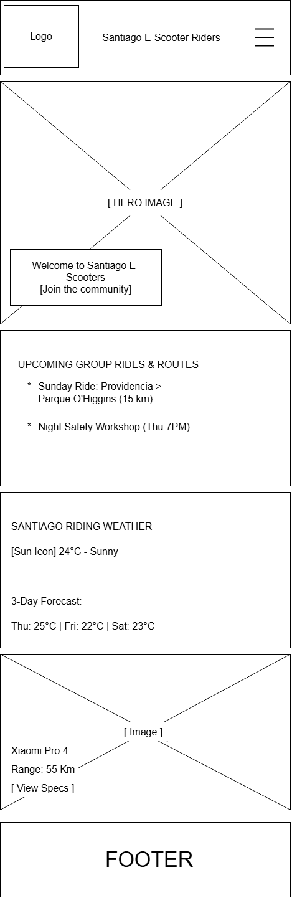
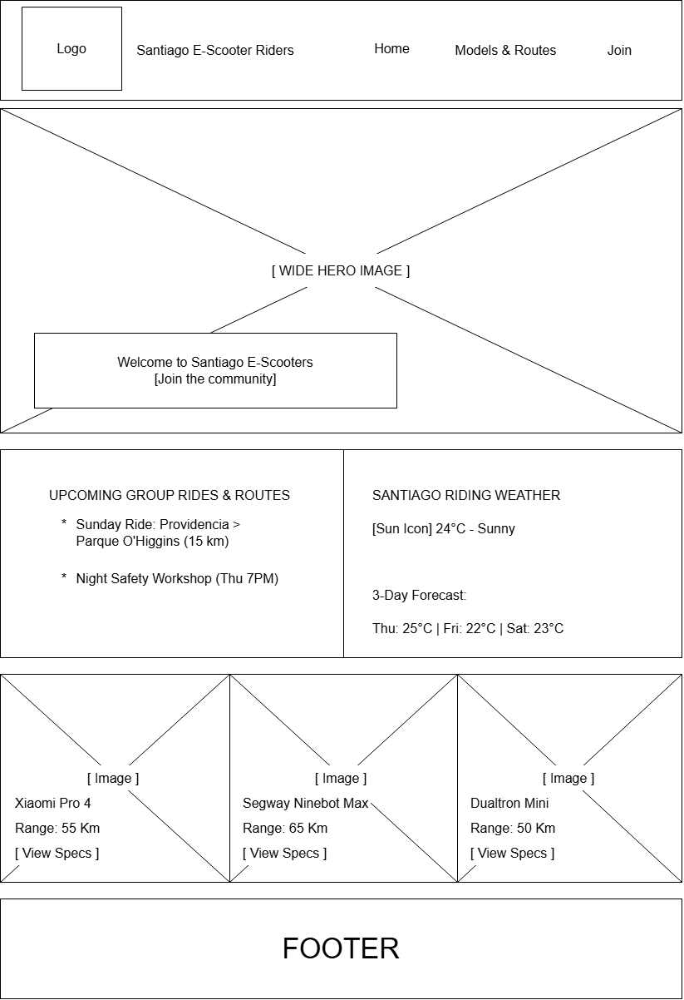

1. Site Name
Selected Name: Santiago E-Scooter Riders
Reason: This name clearly identifies both the geographical focus (Santiago, Chile) and the core community (electric scooter commuters and enthusiasts).
2. Site Purpose
The purpose of this project is to promote sustainable, efficient urban micro-mobility and help both beginners and experienced riders make informed decisions when choosing an electric scooter, while connecting local riders to share safe routes and maintenance tips.
3. Scenarios
- Scenario 1: "I commute 10 km every day from Providencia to Santiago Centro; which electric scooter models have enough battery range and suspension for city bike lanes?"
- Scenario 2: "What basic safety gear and Chilean traffic regulations do I need to know before riding an e-scooter in the city?"
4. Color Scheme
The color palette is extracted directly from the custom logo to represent urban technology, sustainability, and the Andes sky:
#0D3B66
Headers, Navbar, Primary Buttons
#136843
Subheadings (h3), Borders, Links
#7AC943
Highlights, Badges, Hover Effects
#F4F8FB
Page Background & Card Containers
5. Typography
Heading Font: Montserrat (Bold / Semi-Bold)
Used for all major headings (h1, h2, h3) and navigation links to give a modern, geometric, and sporty feel.
Body Font: Open Sans (Regular / Semi-Bold) — Used for all paragraphs, model specifications, form labels, and footer text to guarantee high readability across mobile and desktop screens.
6. Wireframes (Home Page)
Below are the low-fidelity black-and-white wireframes for the mobile and desktop views of the Home page:
Mobile View (320px - 600px)

Desktop View (1024px+)
